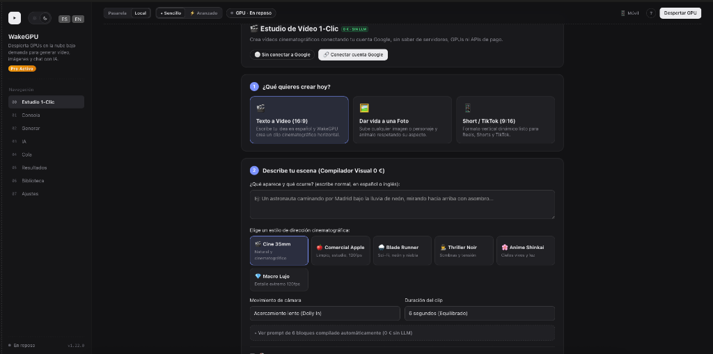
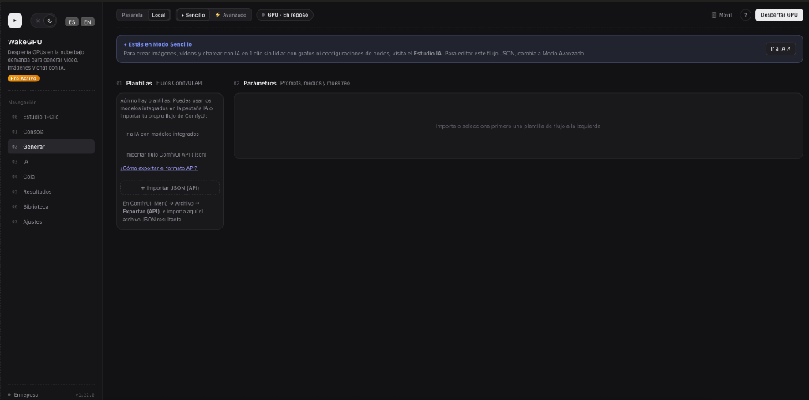
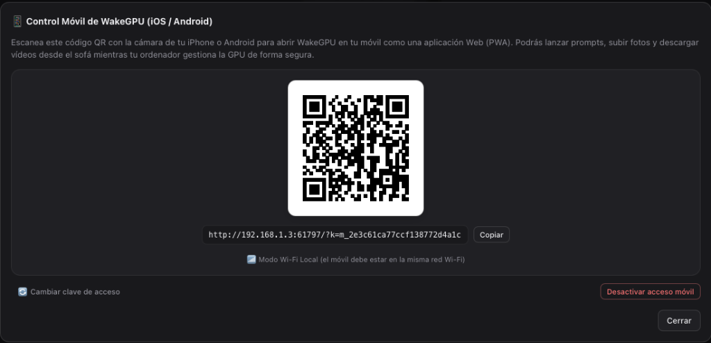

Despierta GPUs en Colab bajo demanda.
Convierte Google Colab en tu estudio de vídeo, imagen y código.
git clone https://github.com/devexsolutions/wakegpu
Licencia MIT para macOS y Windows. Funciona desde 0,0 CU con T4 gratuita.

Apagado automático al terminar la cola
Google Colab cobra por tiempo asignado aunque no estés renderizando. El Guardián Zero-Waste libera la GPU al instante.
Generación directa sin configurar nodos
El compilador visual convierte una frase sencilla en un prompt cinematográfico de 6 bloques compatible con Wan 2.1 y Hunyuan, sin APIs de OpenAI.
- Perfil gratuito Wan 2.1 1.3B optimizado para Tesla T4 (0,0 CU).
- Cola desatendida de hasta 50 variantes con semillas aleatorias.
- Auto-HD encadenado tras validar borradores rápidos.
Importa cualquier flujo API de ComfyUI
Detecta automáticamente prompts, imágenes de referencia, semillas y resoluciones desde cualquier JSON exportado en modo API.
- Copia de seguridad automática de tus flujos antes de apagar la GPU.
- Descarga directa de resultados en tu carpeta local de macOS o Windows.

Supervisión desde iPhone o Android
Escanea el código QR de la barra superior para seguir el progreso del render, consultar el saldo de CU y detener la GPU desde cualquier lugar.
- Alertas instantáneas por Discord Webhook o Bot de Telegram.
- Compatible con red local Wi-Fi y túnel remoto seguro.

De cero a vídeo en tres pasos
Sin configurar servidores Docker ni alquilar máquinas dedicadas por meses.
-
Conecta Google o tu pasarela
Inicia sesión en Modo Local Directo con tu cuenta de Google o conecta una pasarela VPS compartida.
-
Elige perfil y compila la escena
Usa Wan 2.1 en T4 gratuita, RealVisXL o cualquier modelo de Hugging Face detectado en un clic.
-
Renderiza y apaga automáticamente
WakeGPU despierta la GPU, descarga el archivo final en tu ordenador y libera la instancia al terminar.
Proxy OpenAI para IDEs y canales n8n
Conecta Cursor o VS Code a tus propios LLMs en Colab y automatiza lotes mediante API local.
# Cursor / Continue.dev / VS Code
curl http://127.0.0.1:8188/v1/chat/completions \
-H "Content-Type: application/json" \
-d '{
"model": "qwen3.8-27b",
"messages": [{"role": "user", "content": "Refactor module"}]
}'# POST http://127.0.0.1:8188/api/jobs
ffmpeg -f concat -safe 0 -i clips.txt -c copy short.mp4
ffmpeg -i short.mp4 -i voice.mp3 -c:v copy -c:a aac out.mp4
# Zero-Waste shuts down GPU once batch completesCoste neto de GPU sin intermediarios
Pagas directamente a Google solo por los minutos de cálculo que utilizas. El software es gratis.
| Concepto | WakeGPU + Google Colab | Plataformas SaaS de créditos |
|---|---|---|
| Licencia del software | 0 € (Código abierto MIT) | 29 € a 99 € al mes |
| Coste por generación | 0 € en T4 gratis o ~0,12 € en L4 | Margen superior al 500 % |
| Apagado en reposo | Automático en 60 s (Zero-Waste) | Los créditos no usados caducan |
| Modelos compatibles | Wan 2.1, Hunyuan, Flux, SDXL, Qwen | Solo modelos cerrados propios |
| Privacidad y archivos | Descarga directa a tu disco local | Alojamiento en servidores externos |
Descarga nativa para macOS y Windows
Binarios ligeros compilados en Go con interfaz nativa Cocoa y WebView2.
macOS (Apple Silicon e Intel)
Paquete nativo WakeGPU.app con ventana Cocoa WebKit. Descomprime el archivo y muévelo a Aplicaciones.
Windows 10 y 11 (64 bits)
Ejecutable único portátil sin instalador. Verifica su huella SHA-256 con el manifiesto latest.json.
Preguntas frecuentes
Detalles sobre Google Colab, privacidad y licencia.
¿Necesito pagar Google Colab para empezar?
No. Puedes arrancar una GPU T4 gratuita (0,0 CU) con RealVisXL para imágenes o Wan 2.1 1.3B para vídeo. Para modelos pesados como Wan 14B o MiniMax H3 se recomienda Colab Pro o bonos de Compute Units.
¿Por qué es mucho más económico que Runway o Kling?
Las plataformas SaaS cobran márgenes superiores al 500 % sobre el cómputo base. Con WakeGPU pagas el precio neto de Google y la aplicación es 100 % gratuita.
¿Es realmente software libre bajo Licencia MIT?
Sí. Todo el código en Go, la interfaz y los scripts están publicados bajo Licencia MIT sin muros de pago ni funciones bloqueadas.
¿Cómo funciona la conexión sin servidor VPS?
En Modo Local Directo autenticas tu propia cuenta de Google desde la aplicación y estableces un túnel cifrado directo hacia la instancia de Colab.